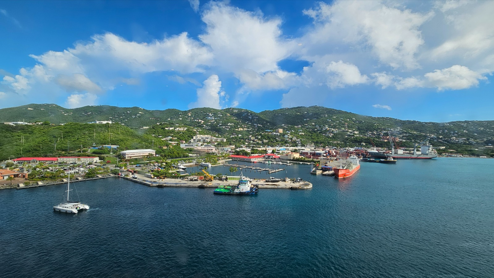
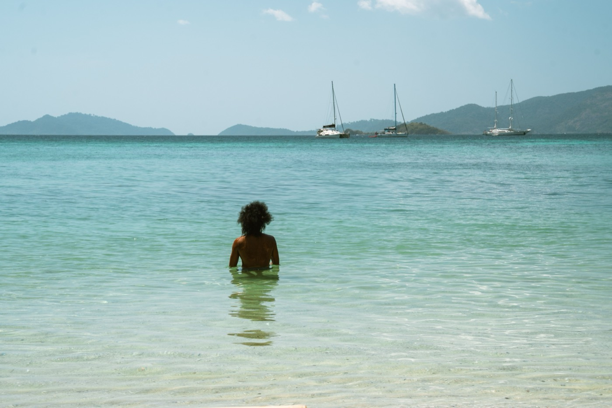

Moving to St Vincent & the Grenadines in 2026
Thirty-two islands, a sailing culture instead of a resort strip, one of the easiest residency paths in the Caribbean, and a tax system that surprises people. Also a volcano.

Quick take
- Cost of livingOne person all in runs about $1,241 a month. A Kingstown one-bedroom is around $407.
- ResidencyOne of the easiest in the region. No golden visa, no investment minimum, 7 years to permanent.
- TaxWatch this one. The top 40% rate starts around US$17,000 of taxable income.
- SafetyLevel 1. Calmer than most neighbours. The volcano is the real variable.
- Getting thereArgyle International has run direct service since 2017, including Virgin Atlantic from the UK.
- Best forSailors, remote workers, and people who wanted the Caribbean before it was packaged.
St Vincent and the Grenadines is 32 islands, nine of them inhabited, and it is the closest thing left to the Caribbean before the Caribbean was branded. There is no resort strip. There is no cruise-ship shopping village worth the name. What there is instead is one of the great sailing grounds on earth, an ordinary working country on the main island, and a handful of small islands where the ratio of yachts to hotels tips heavily toward yachts. It is affordable, it is easy to get residency in, and there are two things about it that most relocation guides skip entirely.
What a month costs
By Caribbean standards this is a cheap country, provided you stay off the private islands. A single person spends roughly $1,241 a month all in, or about $957 before rent. A one-bedroom in Kingstown averages $407. A family of four runs near $3,480 a month before rent. Kingstown comes in around 62% cheaper than New York.
Monthly money, in US dollars
The middle bar is the point: local wages sit below the cost of a comfortable expat month. If your income arrives from abroad, this country is inexpensive. If you plan to earn locally, it is not.
The Eastern Caribbean dollar is pegged at 2.70 to the US dollar, so there is no currency risk to manage, which is more than can be said for a lot of places at this price point. VAT is 16%, dropping to 10% on hospitality and restaurants since January 2025. Living on Bequia costs more than the main island, and living on Mustique or Canouan is a different financial conversation entirely.
The tax detail most guides skip
Here is the first thing that gets left out. Income tax is progressive and the bands are compressed by developed-country standards: the top marginal rate of 40% starts at roughly US$17,000 of taxable income. That is not a typo. There is no capital gains tax, which softens the picture considerably for investors, but anyone imagining a low-tax island should look at the actual table first.
Where the sources disagree
Reputable sources contradict each other on whether St Vincent taxes residents on worldwide income or only on income actually remitted into the country. A remittance basis would matter enormously to anyone with foreign earnings. We are not going to pretend to resolve it in a relocation guide.
What we will say plainly: if your move depends on the answer, that is a paid question for a Vincentian tax adviser before you buy a ticket, not a question for a blog. Tax residence generally triggers at 183 days or by having your main home in the country.
Residency, which is refreshingly boring
There is no golden visa here, and that turns out to be good news. A temporary residence permit, usually one year, is available if you hold a work permit, start a business, own property, or qualify as a person of independent means with proof of sufficient funds. The financial bar is not high, which makes this one of the few Caribbean countries where an ordinary retiree or remote worker can regularise their status without writing a six-figure cheque.
Permanent residency arrives after seven years, with a route to citizenship after that. Most Western nationals enter visa free for one month; CARICOM citizens and British passport holders get six. Buying land requires an Alien Land Holding License, with duties that can reach about 17%, though ongoing property taxes afterwards are low.
Is St Vincent safe?
By regional standards, yes. The State Department rates it Level 1 and most residents go years without an incident. Petty theft concentrates around Kingstown and the ferry terminal. Violent crime exists but rarely involves foreigners.
The risk that deserves your attention is geological. La Soufriere is an active volcano and it erupted explosively in April 2021, forcing more than 22,000 people off the northern third of the main island and causing over US$234 million in damage. Ash reached Barbados.
The reassuring half of that story is what happened next. A US$42 million World Bank-backed emergency programme rebuilt infrastructure and paid over 4,600 people to clear ash and debris. In January 2026 the government funded eight additional mountain monitoring stations, upgraded existing ones, and completed a renovated Volcano Observatory at EC$4.6 million. The volcano currently sits at alert level 1 of 5, meaning normal. This is a country that has been hit and has visibly spent money on seeing the next one coming. Northern St Vincent is still the part of the island to think hardest about.
Medical care, and the flight you must be able to afford
Around 39 facilities handle primary care, and Milton Cato Memorial Hospital in Kingstown carries about 200 beds for secondary care. Beyond that, the island runs out of road. Serious cardiac events, complex surgery, and oncology mean evacuation to Barbados, Trinidad, or the US.
So the rule here is the same as everywhere in the small-island Caribbean, and it is worth repeating because people skip it: buy international insurance that includes air evacuation. Not travel insurance. Evacuation cover. If you are over 60 or managing a condition, price that policy before you price a house.
Remote work: now viable
This changed recently and materially. A submarine fibre cable now links the main island to Bequia, Mustique, Canouan, and Union Island, with Flow and Digicel rolling out fibre to the home. Video calls and cloud work are practical from islands where, a few years ago, they were a gamble.
Air access improved earlier and matters just as much. Argyle International opened in 2017 and ended the era of connecting through Barbados on a small plane. Caribbean Airlines, interCaribbean, Winair, Air Canada, and American all serve it, Virgin Atlantic flies from the UK, and the airport handled 610,859 passengers in 2023. Those two upgrades together are why St Vincent is a genuinely different proposition in 2026 than it was in 2016.
Choosing your island

- Main island, southwest strip: Villa through Arnos Vale to Calliaqua. Best value, closest to services and the airport, and where most working people land.
- Bequia: the balanced Grenadines choice. A real village economy, decent services, and the country's most established expat community. Costs more than the mainland and is worth it to the right person.
- Mustique and Canouan: private-island territory, properties routinely past $1M, and a social world you are either invited into or not.
- Northern St Vincent: beautiful, cheapest, and sits closest to the volcano. Go in with that priced.
One more thing you should know
St Vincent and the Grenadines still criminalises consensual same-sex relationships and offers no anti-discrimination protection on grounds of sexual orientation. Enforcement against foreign residents is not the practical issue; the absence of legal protection is. We would rather you read that here than discover it after shipping your things.
So is St Vincent right for you?
- Strong fit if: you sail or want to, your income arrives from outside the country, you value an easy and honest residency process over a marketed one, and you like places that have not been finished for you.
- Think hard if: you need advanced local healthcare, you want turnkey services and a formal property market, or your budget assumes low local taxes without checking the bands.
The best argument for St Vincent is also the simplest. Most of the Caribbean sold its coastline. This country largely did not, and you can still buy into that for the price of a modest apartment somewhere duller.
The land is cheap. The building knowledge is the expensive part
Volcanic soil, steep ground, and hurricane season are a specific set of constraints, and most of what gets built on them is built by guesswork. SORA designs and builds homes across the tropics, with our deepest roots in Panama and Costa Rica, where residency is straightforward and building costs a fraction of the coastal Caribbean. If the move is really about a place of your own in the sun, it is worth seeing what a fixed-price build looks like before you commit to any one island.
Frequently asked questions
How do you get residency in St Vincent & the Grenadines?
There is no golden visa. A one-year temporary residence permit is available if you hold a work permit, start a business, own property, or qualify as a person of independent means with proof of sufficient funds. The bar is not high. Permanent residency follows after seven years, with a route to citizenship. Buying land requires an Alien Land Holding License, with duties up to about 17%.
How much does it cost to live in St Vincent & the Grenadines?
About $1,241 a month for one person including modest rent, or roughly $957 before rent. A Kingstown one-bedroom averages $407, and a family of four runs near $3,480 before rent. Bequia costs more than the main island, and Mustique or Canouan are in another bracket entirely.
What is the income tax rate in St Vincent & the Grenadines?
Progressive, and the bands are tight: the top marginal rate of 40% begins around US$17,000 of taxable income. There is no capital gains tax. VAT is 16%, reduced to 10% for hospitality and restaurants. Sources disagree on whether foreign income is taxed on a worldwide or remittance basis, so confirm with a local adviser.
Is St Vincent & the Grenadines safe, and what about the volcano?
The State Department rates it Level 1 and violent crime rarely involves foreigners, though petty theft concentrates around Kingstown. La Soufriere erupted in April 2021, displacing over 22,000 people. It now sits at alert level 1 of 5, and the government added eight monitoring stations and a renovated observatory in January 2026.
Can you work remotely from the Grenadines?
Yes. A submarine fibre cable links the main island to Bequia, Mustique, Canouan, and Union Island, with Flow and Digicel deploying fibre to the home. Speeds now support video calls and cloud work. Argyle International, open since 2017, adds direct regional and UK flights.
Sources & verification
Figures in this guide were checked against primary and authoritative sources on 27 July 2026. Immigration, tax, and cost figures change, so always confirm the current rules with the official body or a licensed professional before acting.
- St Vincent & the Grenadines Immigration Department · official residency authority
- US State Department · travel advisory level and entry requirements
- World Bank · La Soufriere recovery programme and 2026 monitoring upgrades
- Wise · 2026 cost-of-living and local salary figures
- Argyle International Airport · carriers, routes and passenger volume